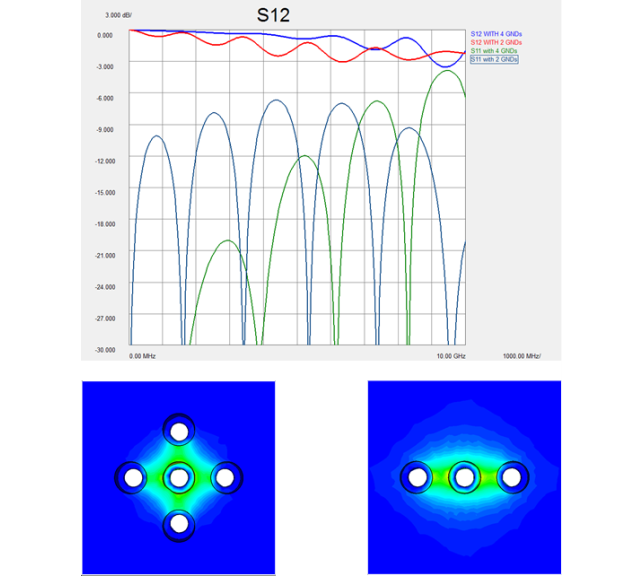
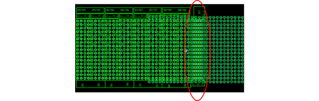
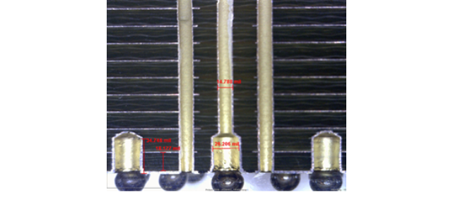

Twinning family board via design
The via requirements for the Twinning family board are equivalent to the standard V93000 DUT board via requirements (see Pogo via examples), with the exception that the top pad specification should be equivalent to the bottom pad (a minimum diameter of 56 mil). This is because the top side will have the mating of the Twinning pogo segment pogo pins.
The Twinning standard pogo segment provides full freedom on the assignment of the signal/ground configuration. One can copy the standard V93000 configuration or any other style. Even for the common pogo pin locations it is possible to use controlled depth drill vias or a sequential lamination process to change the signal to ground via configuration. But it is important to note that due to the length of the standard pogo segment, reducing the number of ground pins surrounding the signal pin has an impact on the interconnect performance as shown in the figure below. Crosstalk to adjacent pins will also increase.

One important thing to keep in mind for the Twinning family board via design is the MS-DPS pogo block location. In this area, as shown in the figure below, the V93000 pogo via distribution is different from the Twinning pogo segment pin distribution. This is only a problem if an MS-DPS pogo block exists on that location.

One solution is to do a controlled depth drill for the MS-DPS pogo pin location, avoiding a via that goes through the entire family board. Then a controlled depth via can be done on the top side for the Twinning segment pogo pin, as illustrated below.

It is also recommended for the Twinning family board design, that any unused pogo locations should still have a 56 mil top and bottom pad without any via, even if that location is not loaded with a pogo segment. The reason is to prevent the pogo pins from getting contaminated by pressing into non-metalized PCB board surfaces, should a segment be added on that location in the future (for example for a new application).
For additional information on changing the signal to ground via configuration please see:
Jose Moreira, Heidi Barnes and Vincent Poisson, PCB Via Field with Embedded Pitch Transformation for ATE Pogo Pin Blocks, IEEE Workshop on Signal and Power Integrity, 2015
Functional changes
- Introduced in SmarTest 8.2.0